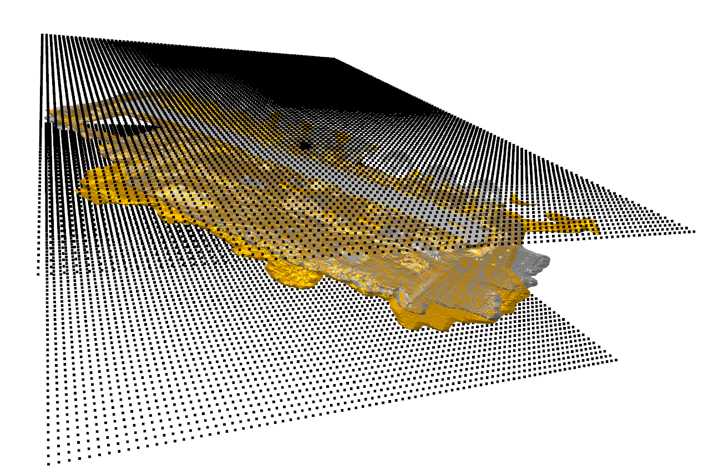

Volume calculation
Progress monitoring of construction sites is becoming increasingly popular in the construction industry. Especially with the integration of 4D BIM, the progression and quality of the construction process can be better quantified. A key aspect is the detection of the changes between consecutive epochs of measurements on the site. However, the development of automated procedures is challenging due to noise, occlusions and the associativity between different objects. The focus here will be on volume calculations between two epochs. In extension the volume between an epoch and a as-deign model will be calculated. This is the first step to progress monitoring the site for quantity take-offs.
In this testcase, we will discuss how to use GEOMAPI to assess progress on a typical BIM-driven construction site. Concretely, we will demonstrate the API’s functionality to:
Preprocess the BIM data from multiple IFC files
Preprocess the various remote sensing data (images, meshes, point clouds) of two measurement epochs
Make a subselection of observable objects
Determine the volume of the observable objects
Serialize the analysis results
Use the resulting RDF Graph of epoch 1 to support the analysis of epoch 2.
from rdflib import Graph, plugin
import uuid
import importlib
import PIL.Image as PILimage
import os.path
import open3d as o3d
import trimesh
import cv2
import xml.etree.ElementTree as ET
import numpy as np
from rdflib import URIRef
#IMPORT MODULES
from context import geomapi
from geomapi.nodes import *
import geomapi.utils as ut
from geomapi.utils import geometryutils as gmu
import geomapi.tools as tl
from geomapi.tools import validationtools as vt
import geomapi.tools.progresstools as pt
Jupyter environment detected. Enabling Open3D WebVisualizer.
[Open3D INFO] WebRTC GUI backend enabled.
[Open3D INFO] WebRTCWindowSystem: HTTP handshake server disabled.
%load_ext autoreload
%autoreload 2
We select the right projectpath for the rest of the rest of the testcase
projectPath= "C:\RepoHeinder\geomapi\developmenttests\Sample4"
BIM Model
The dataset that will be used for this analysis is a road with some enviremantal accents such as trees and a ditch. Fig. 1 shows the ifc file of the road construction site. First we will create BIM Nodes from the entire IFC file. Following the GEOMAPI principles, we serialize all relevent objects in the BIM model to an RDF Graph.
Fig.1: Road construction site: IFC file.
Preprocessing the BIM Model
Following the GEOMAPI principles, we serialize all relevent objects in the BIM model to an RDF Graph.For this analysis, we parse the ifc files using all CPU’s.
ifcPath = os.path.join(projectPath ,'Mariakerke_AWV_Conform_3D_BT_l72.ifc')
print(ifcPath)
bimNodes=tl.ifc_to_nodes_multiprocessing(ifcPath)
bimNodes=[n for n in bimNodes if n.resource]
C:\RepoHeinder\geomapi\developmenttests\Sample4\Mariakerke_AWV_Conform_3D_BT_l72.ifc
for node in bimNodes:
node.name=node.subject
It is not uncommon for certain elements to not have geometry or have some invalid meshes. These will yield Geometry Production Errors.
We visualize the ifc model with open 3d.
bimgeometries=[n.resource for n in bimNodes if n.resource]
o3d.visualization.draw_geometries(bimgeometries)
When looking at the instance variables of one of the BIMNodes, it is revealed that GEOMAPI has indeed gathered all the relevant metadata for geomatic analysis of the objects.
{key:value for key, value in bimNodes[0].__dict__.items() if not key.startswith('__') and not callable(key)}
{'_ifcPath': 'C:\\RepoHeinder\\geomapi\\developmenttests\\Sample4\\Mariakerke_AWV_Conform_3D_BT_l72.ifc',
'_globalId': '1o3B_qZ1zDJ8f$yWqBiQOZ',
'_cartesianBounds': array([1.00576881e+05, 1.00579115e+05, 1.96310389e+05, 1.96312474e+05,
5.46586985e+00, 6.56586985e+00]),
'_orientedBounds': array([[1.00577661e+05, 1.96309979e+05, 5.56611876e+00],
[1.00579485e+05, 1.96311006e+05, 5.75898376e+00],
[1.00576874e+05, 1.96311527e+05, 4.77447267e+00],
[1.00577311e+05, 1.96310386e+05, 6.71038408e+00],
[1.00578348e+05, 1.96312961e+05, 6.11160300e+00],
[1.00576524e+05, 1.96311934e+05, 5.91873799e+00],
[1.00579135e+05, 1.96311414e+05, 6.90324908e+00],
[1.00578698e+05, 1.96312554e+05, 4.96733768e+00]]),
'_orientedBoundingBox': OrientedBoundingBox: center: (100578, 196311, 5.83886), extent: 2.10216, 1.90812, 1.26405),
'_subject': rdflib.term.URIRef('file:///BT3_Waterbouwkundige_Constructie_KNW2_1o3B_qZ1zDJ8f_yWqBiQOZ'),
'_graph': None,
'_graphPath': None,
'_path': None,
'_name': 'file:///BT3_Waterbouwkundige_Constructie_KNW2_1o3B_qZ1zDJ8f_yWqBiQOZ',
'_timestamp': '2022-11-17T09:43:28',
'_resource': TriangleMesh with 149 points and 302 triangles.,
'_cartesianTransform': array([[1.00000000e+00, 0.00000000e+00, 0.00000000e+00, 1.00577790e+05],
[0.00000000e+00, 1.00000000e+00, 0.00000000e+00, 1.96311741e+05],
[0.00000000e+00, 0.00000000e+00, 1.00000000e+00, 5.91418604e+00],
[0.00000000e+00, 0.00000000e+00, 0.00000000e+00, 1.00000000e+00]]),
'className': 'IfcSite',
'pointCount': 149,
'faceCount': 302}
We can buffer these geometries on drive so we only have to parse the ifc file once. We can then reload these geometries to assess the other flight data.
folder=os.path.join(projectPath,'myAnalysisFolder')
if not os.path.exists(folder):
os.mkdir(folder)
for node in bimNodes:
node.save_resource(os.path.join(folder,'BIM'))
This also sets the path of each node
print(bimNodes[0].path)
C:/RepoHeinder/geomapi/developmenttests/Sample4/myAnalysisFolder/BIM/BT3_Waterbouwkundige_Constructie_KNW2_1o3B_qZ1zDJ8f_yWqBiQOZ.ply
Now it is good practice to already serialize these nodes in a RDF graph so we can rapidly load the nodes from the graphs in a next code run. In this testcase, we will store the generated graph in the same location as the buffered mesh geometries.
graphPath=os.path.join(projectPath,'myAnalysisFolder','BIM','bimGraph.ttl')
tl.nodes_to_graph(nodelist=bimNodes,graphPath=graphPath,save=True)
<Graph identifier=N2c91d99111954fff81bf35371c4d2f0f (<class 'rdflib.graph.Graph'>)>
This sets each BIMNodes’ graphpath and graph. The graph of BIMNodes[0] then looks as follows.
print(bimNodes[0].graphPath)
print(bimNodes[0].graph.serialize())
C:/RepoHeinder/geomapi/developmenttests/Sample4/myAnalysisFolder/BIM/bimGraph.ttl
@prefix e57: <http://libe57.org#> .
@prefix ifc: <http://ifcowl.openbimstandards.org/IFC2X3_Final#> .
@prefix openlabel: <https://www.asam.net/index.php?eID=dumpFile&t=f&f=3876&token=413e8c85031ae64cc35cf42d0768627514868b2f#> .
@prefix v4d: <https://w3id.org/v4d/core#> .
@prefix xsd: <http://www.w3.org/2001/XMLSchema#> .
<file:///BT3_Waterbouwkundige_Constructie_KNW2_1o3B_qZ1zDJ8f_yWqBiQOZ> a v4d:BIMNode ;
ifc:className "IfcSite" ;
ifc:globalId "1o3B_qZ1zDJ8f$yWqBiQOZ" ;
ifc:ifcPath "..\\..\\Mariakerke_AWV_Conform_3D_BT_l72.ifc" ;
e57:cartesianBounds """[1.00576881e+05 1.00579115e+05 1.96310389e+05 1.96312474e+05
5.46586985e+00 6.56586985e+00]""" ;
e57:cartesianTransform """[[1.00000000e+00 0.00000000e+00 0.00000000e+00 1.00577790e+05]
[0.00000000e+00 1.00000000e+00 0.00000000e+00 1.96311741e+05]
[0.00000000e+00 0.00000000e+00 1.00000000e+00 5.91418604e+00]
[0.00000000e+00 0.00000000e+00 0.00000000e+00 1.00000000e+00]]""" ;
e57:pointCount 149 ;
v4d:faceCount 302 ;
v4d:name "file:///BT3_Waterbouwkundige_Constructie_KNW2_1o3B_qZ1zDJ8f_yWqBiQOZ" ;
v4d:orientedBounds """[[1.00577661e+05 1.96309979e+05 5.56611876e+00]
[1.00579485e+05 1.96311006e+05 5.75898376e+00]
[1.00576874e+05 1.96311527e+05 4.77447267e+00]
[1.00577311e+05 1.96310386e+05 6.71038408e+00]
[1.00578348e+05 1.96312961e+05 6.11160300e+00]
[1.00576524e+05 1.96311934e+05 5.91873799e+00]
[1.00579135e+05 1.96311414e+05 6.90324908e+00]
[1.00578698e+05 1.96312554e+05 4.96733768e+00]]""" ;
v4d:path "BT3_Waterbouwkundige_Constructie_KNW2_1o3B_qZ1zDJ8f_yWqBiQOZ.ply" ;
openlabel:timestamp "2022-11-17T09:43:28" .
Note that all path triples in graph are serialized relative to the graphPath so to make it easier to move the entire folderstructure.
Reloading from graph
The above steps only have to be performed once. On reruns of the code or future analysis, we can initialize the same nodes from their serialized triples in the bimGraph. This is significantly faster for smaller graphs.
graphPath=os.path.join(projectPath,'myAnalysisFolder','BIM','bimGraph.ttl')
bimNodes=tl.graph_path_to_nodes(graphPath=graphPath,getResource=True)
print(len(bimNodes))
64
Flight data
We will evaluate two flights captured in two exacutive weeks on the site. 101_0365 is captured the last week of may, 101_0366 is captured the first week of June. This data is captured with the RTK-Drone (DJI Phantom 4, RTK)
Flight 101_0366
Preprocess measurements flight 101_0366
Data of flight 101_0366 will be imported as part of a SessionNode. This sessionNode contains the individual Nodes of each of the resources and also some general metadata.
First, we parse each set of resources (1 point cloud, 56 Images and the photogrammetric mesh).
NOTE: This is alot of data, some of which we potentially don’t need as observable objects might not be located within the sensors Field-of-View. GEOMAPI plans for this, and allows Node metadata initialisation from other sources but the actual data such as image metadata files, e57 headers, etc. The actual resources that are needed can be imported at a later stage through get_resource() methods.
Fig.2: Road construction site: mesh of flight 101_0366 .
E57 POINT CLOUDS: These nodes from the e57 header instead of actually importing the data so a first spatial analysis can be conducted effeciently
e57Path=os.path.join(projectPath ,'Pointclouds','101_0366','PCDLAMBERT72_TAW.e57')
pcdNodes=tl.e57header_to_nodes(e57Path)
#serialize nodes
folder=os.path.join(projectPath,'myAnalysisFolder','PCD')
if not os.path.exists(folder):
os.mkdir(folder)
graphPath=os.path.join(projectPath,'myAnalysisFolder','PCD','pcdGraph101_0366.ttl')
tl.nodes_to_graph(nodelist=pcdNodes,graphPath=graphPath,save=True)
{key:value for key, value in pcdNodes[0].__dict__.items() if not key.startswith('__') and not callable(key)}
{'_e57Index': 0,
'pointCount': 6784867,
'e57XmlPath': None,
'_cartesianBounds': array([1.00552700e+05, 1.00634825e+05, 1.96220530e+05, 1.96326367e+05,
5.05700000e+00, 8.25700000e+00]),
'_orientedBounds': None,
'_orientedBoundingBox': None,
'_subject': rdflib.term.URIRef('file:///PCDLAMBERT72_TAW'),
'_graph': <Graph identifier=N4ea4c35b86e740c4a7dbea4275c5f9fc (<class 'rdflib.graph.Graph'>)>,
'_graphPath': 'O:\\Code\\geomapi\\developmenttests\\Sample4\\myAnalysisFolder\\PCD\\pcdGraph101_0366.ttl',
'_path': 'O:\\Code\\geomapi\\developmenttests\\Sample4\\Pointclouds\\101_0366\\PCDLAMBERT72_TAW.e57',
'_name': 'PCDLAMBERT72_TAW',
'_timestamp': '2022-07-19T15:51:08',
'_resource': None,
'_cartesianTransform': None}
Geolocated Images: Analogue to the point cloud data, the ImageNodes are initialised from a Metashape .xml file.
folder=os.path.join(projectPath,'myAnalysisFolder','Photos')
if not os.path.exists(folder):
os.mkdir(folder)
graphPath=os.path.join(projectPath,'myAnalysisFolder','Photos','imageGraph101_0366.ttl')
photoPath = os.path.join(projectPath ,'Photos','101_0366')
allSessionFilePaths=ut.get_list_of_files(photoPath)
nodelist=[]
for path in allSessionFilePaths:
if path.endswith(".JPG") or path.endswith(".PNG"):
testXmpPath=path.replace('JPG','xmp')
if testXmpPath in allSessionFilePaths:
nodelist.append(ImageNode(path=path,xmpPath=testXmpPath,sessionPath=photoPath))
# tl.nodes_to_graph(nodelist=imageNode,graphPath=graphPath,save=True)
# {key:value for key, value in pcdNodes[0].__dict__.items() if not key.startswith('__') and not callable(key)}
else:
nodelist.append(ImageNode(path=path,sessionPath=photoPath))
# tl.nodes_to_graph(nodelist=imageNode,graphPath=graphPath,save=True)
# {key:value for key, value in pcdNodes[0].__dict__.items() if not key.startswith('__') and not callable(key)}
if path.endswith(".xml"):
nodelist.extend(tl.img_xml_to_nodes(path, getResource=True,graphPath=graphPath))
imageNode=tl.img_xml_to_nodes(path)
tl.nodes_to_graph(nodelist=imageNode,graphPath=graphPath,save=True)
{key:value for key, value in imageNode[0].__dict__.items() if not key.startswith('__') and not callable(key)}
{'_xmlPath': 'O:/Code/geomapi/developmenttests/Sample4/Photos/101_0366/ReferenceLAMBERT72_TAW.xml',
'_xmpPath': None,
'_orientedBoundingBox': None,
'imageWidth': 5472,
'imageHeight': 3648,
'focalLength35mm': None,
'_subject': rdflib.term.URIRef('file:///101_0366_0001'),
'_graph': <Graph identifier=N0156f2eeacd44625a61e417f246e9ef6 (<class 'rdflib.graph.Graph'>)>,
'_graphPath': 'O:\\Code\\geomapi\\developmenttests\\Sample4\\myAnalysisFolder\\Photos\\imageGraph101_0366.ttl',
'_path': 'O:/Code/geomapi/developmenttests/Sample4/Photos/101_0366/101_0366_0001.jpg',
'_name': '101_0366_0001',
'_timestamp': '2021-06-07T16:46:33',
'_resource': None,
'_cartesianTransform': array([[-7.62667168e-01, -6.46788794e-01, 1.74532837e-03,
1.00574925e+05],
[ 6.46789780e-01, -7.62668330e-01, 0.00000000e+00,
1.96307775e+05],
[ 1.33110667e-03, 1.12886055e-03, 9.99998477e-01,
3.14713656e+01],
[ 0.00000000e+00, 0.00000000e+00, 0.00000000e+00,
1.00000000e+00]]),
'sxy': 0.02,
'sz': 0.05,
'resolutionUnit': 2,
'geospatialTransform': [51.07479236114782,
3.6635201667228112,
74.20500001762274],
'coordinateSystem': 'geospatial-wgs84'}
Photogrammetric mesh: Mesh files have no metadata headers so the data has to be loaded by GEOMAPI. However, to save memory (and to illustrate the non-data functionality), we will discard the data as soon as the relevant metadata is extracted.
meshPath = os.path.join(projectPath ,'Meshes','101_0366','MeshLAMBERT72_TAW.ply')
texturepath=os.path.join(projectPath ,'Meshes','101_0366','MeshLAMBERT72_TAW.jpg')
meshNode= MeshNode(subject=101_0366,path=meshPath,getResource=True)
#serialize nodes
folder=os.path.join(projectPath ,'myAnalysisFolder','Meshes')
if not os.path.exists(folder):
os.mkdir(folder)
graphPath=os.path.join(projectPath ,'myAnalysisFolder','Meshes','meshGraph101_0366.ttl')
meshNode.to_graph(graphPath=graphPath,save=True)
{key:value for key, value in meshNode.__dict__.items() if not key.startswith('__') and not callable(key)}
{'pointCount': 274850,
'faceCount': 545530,
'_cartesianBounds': array([1.00551838e+05, 1.00635544e+05, 1.96219581e+05, 1.96327133e+05,
5.13973500e+00, 8.25403600e+00]),
'_orientedBounds': array([[1.00601668e+05, 1.96334413e+05, 8.26347399e+00],
[1.00643307e+05, 1.96235497e+05, 8.51657553e+00],
[1.00543892e+05, 1.96310092e+05, 8.09708756e+00],
[1.00601679e+05, 1.96334410e+05, 5.14167178e+00],
[1.00585541e+05, 1.96211172e+05, 5.22838689e+00],
[1.00543903e+05, 1.96310089e+05, 4.97528536e+00],
[1.00643317e+05, 1.96235493e+05, 5.39477332e+00],
[1.00585530e+05, 1.96211176e+05, 8.35018910e+00]]),
'_orientedBoundingBox': OrientedBoundingBox: center: (100594, 196273, 6.74593), extent: 107.323, 62.6867, 3.12182),
'_subject': rdflib.term.URIRef('file:///1010366'),
'_graph': <Graph identifier=N5130223137f84d42818ecbe04dba602b (<class 'rdflib.graph.Graph'>)>,
'_graphPath': 'O:\\Code\\geomapi\\developmenttests\\Sample4\\myAnalysisFolder\\Meshes\\meshGraph101_0366.ttl',
'_path': 'O:\\Code\\geomapi\\developmenttests\\Sample4\\Meshes\\101_0366\\MeshLAMBERT72_TAW.ply',
'_name': 'MeshLAMBERT72_TAW',
'_timestamp': '2022-09-16T17:35:08',
'_resource': TriangleMesh with 274850 points and 545530 triangles.,
'_cartesianTransform': array([[1.00000000e+00, 0.00000000e+00, 0.00000000e+00, 1.00593782e+05],
[0.00000000e+00, 1.00000000e+00, 0.00000000e+00, 1.96271358e+05],
[0.00000000e+00, 0.00000000e+00, 1.00000000e+00, 6.37094559e+00],
[0.00000000e+00, 0.00000000e+00, 0.00000000e+00, 1.00000000e+00]])}
SessionNode
From the above nodes, a overarching session can be created. As such, 2 sessions are created, one for each meaurement epoch.
linkedNodes=pcdNodes + imageNode + [meshNode]
sess101_0366=SessionNode(subject='101_0366', linkedNodes=linkedNodes)
print(len(sess101_0366.linkedNodes))
print(sess101_0366.subject)
58
file:///101_0366
sess101_0366.save_resource(os.path.join(projectPath ,'myAnalysisFolder'))
True
Fig.3: (red) orientedBoundingBoxes of the pcdNodes and the meshNode, (red cones) scaled img field-of-views and (green) convex hull of the sessionNode.
pcdboxes=[n.get_oriented_bounding_box() for n in pcdNodes ]
for box in pcdboxes:
box.color=[1,0,0]
# print(len(pcdboxes))
imggeometries=[n.get_mesh_geometry(depth=2) for n in imageNode ]
[img.paint_uniform_color([1,0,0]) for img in imggeometries]
# print(len(imggeometries))
meshbox=meshNode.get_oriented_bounding_box()
meshbox.color=[1,0,0]
# print(len([meshbox]))
lineset1=o3d.geometry.LineSet.create_from_triangle_mesh(sess101_0366.resource)
lineset1.paint_uniform_color([0,1,0])
# print(len([lineset1]))
mesh=o3d.io.read_triangle_mesh(meshPath)
mesh.paint_uniform_color([1, 0.706, 0])
mesh.compute_vertex_normals()
o3d.visualization.draw_geometries( imggeometries + [meshbox] + [lineset1] + [mesh] + bimgeometries ) #,lineset1,meshbox,imggeometries
# print(len(geometries))
Now it is good practice to already serialize these nodes in a RDF graph so we can rapidly load the nodes from the graphs in a next run. The facilitate the datastructure, we will store the generated graph in the same location.
graphPath=os.path.join(projectPath ,'myAnalysisFolder','sessionGraph101_0366.ttl')
sess101_0366.to_graph(graphPath=graphPath,save=True)
print(sess101_0366.graph.serialize())
@prefix e57: <http://libe57.org#> .
@prefix openlabel: <https://www.asam.net/index.php?eID=dumpFile&t=f&f=3876&token=413e8c85031ae64cc35cf42d0768627514868b2f#> .
@prefix v4d: <https://w3id.org/v4d/core#> .
<file:///101_0366> a v4d:SessionNode ;
e57:cartesianBounds """[1.00543892e+05 1.00643317e+05 1.96211172e+05 1.96334413e+05
4.97528536e+00 3.14892832e+01]""" ;
e57:cartesianTransform """[[1.00000000e+00 0.00000000e+00 0.00000000e+00 1.00593672e+05]
[0.00000000e+00 1.00000000e+00 0.00000000e+00 1.96269668e+05]
[0.00000000e+00 0.00000000e+00 1.00000000e+00 2.57391447e+01]
[0.00000000e+00 0.00000000e+00 0.00000000e+00 1.00000000e+00]]""" ;
v4d:linkedSubjects "['file:///PCDLAMBERT72_TAW', 'file:///101_0366_0001', 'file:///101_0366_0002', 'file:///101_0366_0003', 'file:///101_0366_0004', 'file:///101_0366_0005', 'file:///101_0366_0006', 'file:///101_0366_0007', 'file:///101_0366_0008', 'file:///101_0366_0009', 'file:///101_0366_0010', 'file:///101_0366_0011', 'file:///101_0366_0012', 'file:///101_0366_0013', 'file:///101_0366_0014', 'file:///101_0366_0015', 'file:///101_0366_0016', 'file:///101_0366_0017', 'file:///101_0366_0018', 'file:///101_0366_0019', 'file:///101_0366_0020', 'file:///101_0366_0021', 'file:///101_0366_0022', 'file:///101_0366_0023', 'file:///101_0366_0024', 'file:///101_0366_0025', 'file:///101_0366_0026', 'file:///101_0366_0027', 'file:///101_0366_0028', 'file:///101_0366_0029', 'file:///101_0366_0030', 'file:///101_0366_0031', 'file:///101_0366_0032', 'file:///101_0366_0033', 'file:///101_0366_0034', 'file:///101_0366_0035', 'file:///101_0366_0036', 'file:///101_0366_0037', 'file:///101_0366_0038', 'file:///101_0366_0039', 'file:///101_0366_0040', 'file:///101_0366_0041', 'file:///101_0366_0042', 'file:///101_0366_0043', 'file:///101_0366_0044', 'file:///101_0366_0045', 'file:///101_0366_0046', 'file:///101_0366_0047', 'file:///101_0366_0048', 'file:///101_0366_0049', 'file:///101_0366_0050', 'file:///101_0366_0051', 'file:///101_0366_0052', 'file:///101_0366_0053', 'file:///101_0366_0054', 'file:///101_0366_0055', 'file:///101_0366_0056', 'file:///1010366']" ;
v4d:name "101_0366" ;
v4d:orientedBounds """[[1.00622442e+05 1.96356505e+05 3.02635884e+01]
[1.00673157e+05 1.96237288e+05 3.24867973e+01]
[1.00514762e+05 1.96310732e+05 3.20948960e+01]
[1.00622222e+05 1.96355876e+05 1.55571535e+00]
[1.00565256e+05 1.96190886e+05 5.61023180e+00]
[1.00514541e+05 1.96310103e+05 3.38702292e+00]
[1.00672937e+05 1.96236659e+05 3.77892423e+00]
[1.00565477e+05 1.96191515e+05 3.43181049e+01]]""" ;
v4d:path "101_0366.ply" ;
openlabel:timestamp "2022-07-19T15:51:08" .
Reloading from graph
Similar to the BIM preprocessing, the above steps only have to be performed once. On reruns of the code or future analysis, we can initialize the same nodes from their serialized triples. This is significantly faster for smaller graphs.
sessionGraphPath=os.path.join(projectPath ,'myAnalysisFolder','sessionGraph101_0366.ttl')
week22=SessionNode(graphPath=sessionGraphPath)
#get resourceGraphs
resourceGraph=Graph().parse(os.path.join(projectPath,'myAnalysisFolder','Photos','imageGraph101_0366.ttl') )
resourceGraph+=Graph().parse(os.path.join(projectPath ,'myAnalysisFolder','Meshes','meshGraph101_0366.ttl'))
resourceGraph+=Graph().parse(os.path.join(projectPath,'myAnalysisFolder','PCD','pcdGraph101_0366.ttl'))
sess101_0366.get_linked_nodes(resourceGraph=resourceGraph)
print(len(linkedNodes))
58
Flight 101_0367
Preprocess measurements flight 101_0367
Data of flight 101_0367 will be imported as part of a SessionNode. This sessionNode contains the individual Nodes of each of the resources and also some general metadata.
First, we parse each set of resources (1 point cloud, 56 Images and the photogrammetric mesh).
NOTE: This is alot of data, some of which we potentially don’t need as observable objects might not be located within the sensors Field-of-View. GEOMAPI plans for this, and allows Node metadata initialisation from other sources but the actual data such as image metadata files, e57 headers, etc. The actual resources that are needed can be imported at a later stage through get_resource() methods.
Fig.4: Road construction site: Flight 101_0367.
E57 POINT CLOUDS: These nodes from the e57 header instead of actually importing the data so a first spatial analysis can be conducted effeciently
e57Path=os.path.join(projectPath ,'Pointclouds','101_0367','PCDLAMBERT72_TAW.e57')
pcdNodes=tl.e57header_to_nodes(e57Path)
#serialize nodes
folder=os.path.join(projectPath,'myAnalysisFolder','PCD')
if not os.path.exists(folder):
os.mkdir(folder)
graphPath=os.path.join(projectPath,'myAnalysisFolder','PCD','pcdGraph101_0367.ttl')
tl.nodes_to_graph(nodelist=pcdNodes,graphPath=graphPath,save=True)
{key:value for key, value in pcdNodes[0].__dict__.items() if not key.startswith('__') and not callable(key)}
{'_e57Index': 0,
'pointCount': 7062921,
'e57XmlPath': None,
'_cartesianBounds': array([1.00552835e+05, 1.00648663e+05, 1.96219459e+05, 1.96324429e+05,
4.85900000e+00, 8.29300000e+00]),
'_orientedBounds': None,
'_orientedBoundingBox': None,
'_subject': rdflib.term.URIRef('file:///PCDLAMBERT72_TAW'),
'_graph': <Graph identifier=Nd663af1f21504515a3634f0ad82440a8 (<class 'rdflib.graph.Graph'>)>,
'_graphPath': 'O:\\Code\\geomapi\\developmenttests\\Sample4\\myAnalysisFolder\\PCD\\pcdGraph101_0367.ttl',
'_path': 'O:\\Code\\geomapi\\developmenttests\\Sample4\\Pointclouds\\101_0367\\PCDLAMBERT72_TAW.e57',
'_name': 'PCDLAMBERT72_TAW',
'_timestamp': '2022-07-19T16:21:08',
'_resource': None,
'_cartesianTransform': None}
Geolocated Images: Analogue to the point cloud data, the ImageNodes are initialised from a Metashape .xml file.
folder=os.path.join(projectPath,'myAnalysisFolder','Photos')
if not os.path.exists(folder):
os.mkdir(folder)
graphPath=os.path.join(projectPath,'myAnalysisFolder','Photos','imageGraph101_0367.ttl')
photoPath = os.path.join(projectPath ,'Photos','101_0367')
allSessionFilePaths=ut.get_list_of_files(photoPath)
nodelist=[]
for path in allSessionFilePaths:
if path.endswith(".JPG") or path.endswith(".PNG"):
testXmpPath=path.replace('JPG','xmp')
if testXmpPath in allSessionFilePaths:
nodelist.append(imageNode(path=path,xmpPath=testXmpPath,sessionPath=photoPath))
# tl.nodes_to_graph(nodelist=imageNode,graphPath=graphPath,save=True)
# {key:value for key, value in pcdNodes[0].__dict__.items() if not key.startswith('__') and not callable(key)}
else:
nodelist.append(imageNode(path=path,sessionPath=photoPath))
# tl.nodes_to_graph(nodelist=imageNode,graphPath=graphPath,save=True)
# {key:value for key, value in pcdNodes[0].__dict__.items() if not key.startswith('__') and not callable(key)}
if path.endswith(".xml"):
nodelist.extend(tl.img_xml_to_nodes(path, getResource=True,graphPath=graphPath))
imageNode=tl.img_xml_to_nodes(path)
tl.nodes_to_graph(nodelist=imageNode,graphPath=graphPath,save=True)
{key:value for key, value in imageNode[0].__dict__.items() if not key.startswith('__') and not callable(key)}
{'_xmlPath': 'O:/Code/geomapi/developmenttests/Sample4/Photos/101_0367/ReferenceLAMBERT72_TAW.xml',
'_xmpPath': None,
'_orientedBoundingBox': None,
'imageWidth': 5472,
'imageHeight': 3648,
'focalLength35mm': None,
'_subject': rdflib.term.URIRef('file:///101_0367_0001'),
'_graph': <Graph identifier=N0bc778a97fbc46aa8e80c1422821d5c8 (<class 'rdflib.graph.Graph'>)>,
'_graphPath': 'O:\\Code\\geomapi\\developmenttests\\Sample4\\myAnalysisFolder\\Photos\\imageGraph101_0367.ttl',
'_path': 'O:/Code/geomapi/developmenttests/Sample4/Photos/101_0367/101_0367_0001.jpg',
'_name': '101_0367_0001',
'_timestamp': '2021-06-11T10:12:18',
'_resource': None,
'_cartesianTransform': array([[-8.03856861e-01, -5.94822787e-01, 0.00000000e+00,
1.00574782e+05],
[ 5.94822787e-01, -8.03856861e-01, 0.00000000e+00,
1.96307758e+05],
[ 0.00000000e+00, 0.00000000e+00, 1.00000000e+00,
3.13793641e+01],
[ 0.00000000e+00, 0.00000000e+00, 0.00000000e+00,
1.00000000e+00]]),
'sxy': 0.02,
'sz': 0.05,
'resolutionUnit': 2,
'geospatialTransform': [51.07479219445777,
3.6635181388946036,
74.11300116904444],
'coordinateSystem': 'geospatial-wgs84'}
Photogrammetric mesh: Mesh files have no metadata headers so the data has to be loaded by GEOMAPI. However, to save memory (and to illustrate the non-data functionality), we will discard the data as soon as the relevant metadata is extracted.
meshPath = os.path.join(projectPath ,'Meshes','101_0367','MeshLAMBERT72_TAW.ply')
texturepath=os.path.join(projectPath ,'Meshes','101_0367','MeshLAMBERT72_TAW.jpg')
meshNode= MeshNode(subject=101_0367,path=meshPath,getResource=True)
#serialize nodes
folder=os.path.join(projectPath ,'myAnalysisFolder','Meshes')
if not os.path.exists(folder):
os.mkdir(folder)
graphPath=os.path.join(projectPath ,'myAnalysisFolder','Meshes','meshGraph101_0367.ttl')
meshNode.to_graph(graphPath=graphPath,save=True)
{key:value for key, value in meshNode.__dict__.items() if not key.startswith('__') and not callable(key)}
{'pointCount': 301203,
'faceCount': 597197,
'_cartesianBounds': array([1.00552016e+05, 1.00648914e+05, 1.96218781e+05, 1.96325156e+05,
5.12620401e+00, 8.28773785e+00]),
'_orientedBounds': array([[1.00608922e+05, 1.96336024e+05, 8.63864855e+00],
[1.00650676e+05, 1.96238313e+05, 8.91333762e+00],
[1.00536941e+05, 1.96305263e+05, 8.02514903e+00],
[1.00608950e+05, 1.96336026e+05, 5.27847026e+00],
[1.00578722e+05, 1.96207554e+05, 4.93965981e+00],
[1.00536968e+05, 1.96305265e+05, 4.66497074e+00],
[1.00650704e+05, 1.96238315e+05, 5.55315933e+00],
[1.00578694e+05, 1.96207552e+05, 8.29983810e+00]]),
'_orientedBoundingBox': OrientedBoundingBox: center: (100594, 196272, 6.78915), extent: 106.258, 78.2815, 3.36029),
'_subject': rdflib.term.URIRef('file:///1010367'),
'_graph': <Graph identifier=Nc8a3445d7044432bb456ab8ca856d2a3 (<class 'rdflib.graph.Graph'>)>,
'_graphPath': 'O:\\Code\\geomapi\\developmenttests\\Sample4\\myAnalysisFolder\\Meshes\\meshGraph101_0367.ttl',
'_path': 'O:\\Code\\geomapi\\developmenttests\\Sample4\\Meshes\\101_0367\\MeshLAMBERT72_TAW.ply',
'_name': 'MeshLAMBERT72_TAW',
'_timestamp': '2022-09-16T17:35:08',
'_resource': TriangleMesh with 301203 points and 597197 triangles.,
'_cartesianTransform': array([[1.00000000e+00, 0.00000000e+00, 0.00000000e+00, 1.00594174e+05],
[0.00000000e+00, 1.00000000e+00, 0.00000000e+00, 1.96268940e+05],
[0.00000000e+00, 0.00000000e+00, 1.00000000e+00, 6.45470017e+00],
[0.00000000e+00, 0.00000000e+00, 0.00000000e+00, 1.00000000e+00]])}
SessionNode
From the above nodes, a overarching session can be created. As such, 2 sessions are created, one for each meaurement epoch
linkedNodes=pcdNodes + imageNode + [meshNode]
sess101_0367=SessionNode(subject='101_0367', linkedNodes=linkedNodes)
print(len(sess101_0367.linkedNodes))
print(sess101_0367.subject)
80
file:///101_0367
sess101_0367.save_resource(os.path.join(projectPath ,'myAnalysisFolder'))
True
Fig.4: (red) orientedBoundingBoxes of the pcdNodes and the meshNode, (red cones) scaled img field-of-views and (green) convex hull of the sessionNode.
pcdboxes=[n.get_oriented_bounding_box() for n in pcdNodes ]
for box in pcdboxes:
box.color=[1,0,0]
# print(len(pcdboxes))
imggeometries=[n.get_mesh_geometry(depth=2) for n in imageNode ]
[img.paint_uniform_color([1,0,0]) for img in imggeometries]
# print(len(imggeometries))
meshbox=meshNode.get_oriented_bounding_box()
meshbox.color=[1,0,0]
# print(len([meshbox]))
lineset1=o3d.geometry.LineSet.create_from_triangle_mesh(sess101_0366.resource)
lineset1.paint_uniform_color([0,1,0])
# print(len([lineset1]))
mesh=o3d.io.read_triangle_mesh(meshPath)
mesh.paint_uniform_color([1, 0.706, 0])
mesh.compute_vertex_normals()
o3d.visualization.draw_geometries( imggeometries + [meshbox] + [lineset1] + [mesh] + bimgeometries) #,lineset1,meshbox,imggeometries
# print(len(geometries))
Now it is good practice to already serialize these nodes in a RDF graph so we can rapidly load the nodes from the graphs in a next run. The facilitate the datastructure, we will store the generated graph in the same location.
graphPath=os.path.join(projectPath ,'myAnalysisFolder','sessionGraph101_0367.ttl')
sess101_0367.to_graph(graphPath=graphPath,save=True)
print(sess101_0367.graph.serialize())
@prefix e57: <http://libe57.org#> .
@prefix openlabel: <https://www.asam.net/index.php?eID=dumpFile&t=f&f=3876&token=413e8c85031ae64cc35cf42d0768627514868b2f#> .
@prefix v4d: <https://w3id.org/v4d/core#> .
<file:///101_0367> a v4d:SessionNode ;
e57:cartesianBounds """[1.00536941e+05 1.00650704e+05 1.96207552e+05 1.96336026e+05
4.66497074e+00 3.87876819e+01]""" ;
e57:cartesianTransform """[[1.00000000e+00 0.00000000e+00 0.00000000e+00 1.00591584e+05]
[0.00000000e+00 1.00000000e+00 0.00000000e+00 1.96265479e+05]
[0.00000000e+00 0.00000000e+00 1.00000000e+00 2.60218133e+01]
[0.00000000e+00 0.00000000e+00 0.00000000e+00 1.00000000e+00]]""" ;
v4d:linkedSubjects "['file:///PCDLAMBERT72_TAW', 'file:///101_0367_0001', 'file:///101_0367_0002', 'file:///101_0367_0003', 'file:///101_0367_0004', 'file:///101_0367_0005', 'file:///101_0367_0006', 'file:///101_0367_0007', 'file:///101_0367_0008', 'file:///101_0367_0009', 'file:///101_0367_0010', 'file:///101_0367_0011', 'file:///101_0367_0012', 'file:///101_0367_0013', 'file:///101_0367_0014', 'file:///101_0367_0015', 'file:///101_0367_0016', 'file:///101_0367_0017', 'file:///101_0367_0018', 'file:///101_0367_0019', 'file:///101_0367_0020', 'file:///101_0367_0021', 'file:///101_0367_0022', 'file:///101_0367_0023', 'file:///101_0367_0024', 'file:///101_0367_0025', 'file:///101_0367_0026', 'file:///101_0367_0027', 'file:///101_0367_0028', 'file:///101_0367_0029', 'file:///101_0367_0030', 'file:///101_0367_0031', 'file:///101_0367_0032', 'file:///101_0367_0033', 'file:///101_0367_0034', 'file:///101_0367_0035', 'file:///101_0367_0036', 'file:///101_0367_0037', 'file:///101_0367_0038', 'file:///101_0367_0039', 'file:///101_0367_0040', 'file:///101_0367_0041', 'file:///101_0367_0042', 'file:///101_0367_0043', 'file:///101_0367_0044', 'file:///101_0367_0045', 'file:///101_0367_0046', 'file:///101_0367_0047', 'file:///101_0367_0048', 'file:///101_0367_0049', 'file:///101_0367_0050', 'file:///101_0367_0051', 'file:///101_0367_0052', 'file:///101_0367_0053', 'file:///101_0367_0054', 'file:///101_0367_0055', 'file:///101_0367_0056', 'file:///101_0367_0057', 'file:///101_0367_0058', 'file:///101_0367_0059', 'file:///101_0367_0060', 'file:///101_0367_0061', 'file:///101_0367_0062', 'file:///101_0367_0063', 'file:///101_0367_0064', 'file:///101_0367_0065', 'file:///101_0367_0066', 'file:///101_0367_0067', 'file:///101_0367_0068', 'file:///101_0367_0069', 'file:///101_0367_0070', 'file:///101_0367_0071', 'file:///101_0367_0072', 'file:///101_0367_0073', 'file:///101_0367_0074', 'file:///101_0367_0075', 'file:///101_0367_0076', 'file:///101_0367_0077', 'file:///101_0367_0078', 'file:///1010367']" ;
v4d:name "101_0367" ;
v4d:orientedBounds """[[ 1.00634191e+05 1.96360505e+05 3.39444727e+01]
[ 1.00688201e+05 1.96237195e+05 3.58175669e+01]
[ 1.00515284e+05 1.96308505e+05 3.92783745e+01]
[ 1.00633045e+05 1.96359459e+05 -1.80670225e+00]
[ 1.00568147e+05 1.96184149e+05 5.40029379e+00]
[ 1.00514137e+05 1.96307459e+05 3.52719954e+00]
[ 1.00687054e+05 1.96236149e+05 6.63919985e-02]
[ 1.00569293e+05 1.96185194e+05 4.11514687e+01]]""" ;
v4d:path "101_0367.ply" ;
openlabel:timestamp "2022-07-19T16:21:08" .
Reloading from graph
Similar to the BIM preprocessing, the above steps only have to be performed once. On reruns of the code or future analysis, we can initialize the same nodes from their serialized triples. This is significantly faster for smaller graphs.
sessionGraphPath=os.path.join(projectPath ,'myAnalysisFolder','sessionGraph101_0367.ttl')
week22=SessionNode(graphPath=sessionGraphPath)
#get resourceGraphs
resourceGraph=Graph().parse(os.path.join(projectPath,'myAnalysisFolder','Photos','imageGraph101_0367.ttl') )
resourceGraph+=Graph().parse(os.path.join(projectPath ,'myAnalysisFolder','Meshes','meshGraph101_0367.ttl'))
resourceGraph+=Graph().parse(os.path.join(projectPath,'myAnalysisFolder','PCD','pcdGraph101_0367.ttl'))
sess101_0367.get_linked_nodes(resourceGraph=resourceGraph)
print(len(linkedNodes))
80
Volume calculation between two epochs
Visualize the both meshes one in yellow and one in grey.
mesh1=[n.resource for n in sess101_0366.linkedNodes if 'TriangleMesh' in str(type(n.resource))]
mesh1=mesh1[0]
# print(mesh1)
mesh1.compute_vertex_normals()
mesh2=[n.resource for n in sess101_0367.linkedNodes if 'TriangleMesh' in str(type(n.resource))]
mesh2=mesh2[0]
mesh2.compute_vertex_normals()
mesh2.paint_uniform_color([1, 0.706, 0])
o3d.visualization.draw_geometries([mesh1] + [mesh2] )
Two grids of rays are created one above and one beneath the meshes and bim, the height difference can be changed. Here the boundingbox of mesh 1, mesh of session 101_0366 is used to create a grid. The resolution, so distances between each point of the gris is 0.1m. The offset where the grid max is situated above the top of the bounding box and the grid max is siuated beneath the bottom of the bounding box is here 10m. The diection is the orientation of the grid rays where down is faced down and up is faced up.
The bottom grid is only needed for the second method, calculation of volumes between bim and mesh.
resolution=0.1 #m
gridFlightMax=gmu.create_xy_grid(mesh1,resolution=resolution,direction='Down',offset=10) #offset in m
gridFlightMin=gmu.create_xy_grid(mesh1,resolution=resolution,direction='Up',offset=10)
Grids of these rays are transformed in to grids of points to visualize these.
xyzFlightMax=gridFlightMax[:,0:3]
pcdFlightMax = o3d.geometry.PointCloud()
pcdFlightMax.points = o3d.utility.Vector3dVector(xyzFlightMax.numpy())
xyzFlightMin=gridFlightMin[:,0:3]
pcdFlightMin = o3d.geometry.PointCloud()
pcdFlightMin.points = o3d.utility.Vector3dVector(xyzFlightMin.numpy())
Fig.5: Creation of the grids with the both meshes for the calculation between two epochs. 
# mesh=o3d.io.read_triangle_mesh(meshPath)
# mesh.compute_vertex_normals()
o3d.visualization.draw_geometries([mesh1] + [pcdFlightMax] + [pcdFlightMin] + [mesh2] + bimgeometries)
Calculate the volume change between the two epochs
Create depthmaps of the gridMax with both meshes, where every point has a value with the distance of the point to the mesh. If the ray doesn’t intersect with the mesh the value is “-Inf”.
depthmapF1=gmu.get_mesh_intersections(mesh1,gridFlightMax)
depthmapF2=gmu.get_mesh_intersections(mesh2,gridFlightMax)
Calculate the difference between both depthmaps, this gives a value with the distancee between the two meshes where a positive value is where mesh 1, session 101_0366, is beneath mesh 2, session 101_0367.
depthmapDifference = np.asarray(depthmapF1-depthmapF2)
C:\Users\beheerder\AppData\Local\Temp\ipykernel_10188\3747729355.py:1: RuntimeWarning: invalid value encountered in subtract
depthmapDifference = np.asarray(depthmapF1-depthmapF2)
Delete the depthmap at the edges because of a bad photogrammetric reconstruction, you can change the distance to the edges in the function, default 1m.
depthmapDifference=gmu.remove_edges_volume_calculation(depthmapDifference,distance=1)
Fig.6: Coloured pointcloud where everything that is coloured green is a fill and everything that is coloured red is cut, the grey points are a buffer where the volume changes are within the 3cm.
Fig.7: Coloured pointcloud where the edges are still visible which gives dark colors.
Colour the pointcloud gradually everything that is coloured green is a fill and everything that is coloured red is a cut, the grey points are a buffer where the volume changes are within the 3cm, this value can be changed in the function.
coloredpcd=gmu.color_pointcloud_by_height(pcdFlightMax, depthmapDifference, buckets= 5, hmax = 5, buffer=0.03)
PointCloud with 901688 points.
Visualise the coloured pointcloud.
o3d.visualization.draw_geometries( [coloredpcd])
Create a volume depthmap : the difference depthmap multiplied with the resolution squared, this gives a differnce volume per point of the grid. Where a positive value is a fill and a negative value is a cut.
volumeDepthmap=depthmapDifference*resolution*resolution
Split the volumeDepthmap in fill and cut additionally they can be substracted to give a overall view of the volume calculation (there is a limit of 100m because when there is no intersection the algorithm gives inf)
fill=0
cut=0
for x in volumeDepthmap:
if x>0 and x<100:
fill=fill + x
elif x<0 and x > -100:
cut= cut + x
totalVolume=fill+cut
The paths are changed to strings in order to print the volumechanges to create a numeric output too.
meshPath = os.path.join(projectPath ,'Meshes','101_0366','MeshLAMBERT72_TAW.ply')
mesh2Path = os.path.join(projectPath ,'Meshes','101_0367','MeshLAMBERT72_TAW.ply')
string1=str(meshPath)
string2=str(mesh2Path)
flightname1=string1.split('\\')
flightname1=flightname1[-2]
flightname2=string2.split('\\')
flightname2=flightname2[-2]
The cut fill and total volume are printed with the two epochs.
print("The soil that is filled in this project between flight " + flightname1 + " and " + flightname2 + " is " + str(round(fill,2)) + " m³")
print("The soil that is cut in this project between flight " + flightname1 + " and " + flightname2 + " is " + str(round(cut,2)) + " m³") #str(round(cut[0],2)) when not zero
print("The absolute volume change between flight " + flightname1 + " and " + flightname2 + " is " + str(round(totalVolume,2)) + " m³.")
The soil that is filled in this project between flight 101_0366 and 101_0367 is 294.87 m³
The soil that is cut in this project between flight 101_0366 and 101_0367 is -35.3 m³
The absolute volume change between flight 101_0366 and 101_0367 is 259.57 m³.
Save a textfile in the folder
file = open(os.path.join(projectPath ,'myAnalysisFolder','Mesh_vs_mesh.txt'),"w+")
l1 = str("The soil that is filled in this project between flight " + flightname1 + " and " + flightname2 + " is " + str(round(fill,2)) + " m³. \n")
l2 = str("The soil that is cut in this project between flight " + flightname1 + " and " + flightname2 + " is " + str(round(cut,2)) + " m³. \n")
l3 = str("The absolute volume change between flight " + flightname1 + " and " + flightname2 + " is " + str(round(totalVolume,2)) + " m³. \n")
l=[l1 , l2, l3]
file.writelines(l)
file.close()
Export the pointcloud in the folder.
pointcloudPath=os.path.join(projectPath ,r"myAnalysisFolder\colouredPCD.pcd")
o3d.io.write_point_cloud(pointcloudPath, coloredpcd, write_ascii=False, compressed=False, print_progress=True)
True
Calculate the volume change between the an epoch and the as-design bim
Split the grid per object of the bim
Assign distances to parameters to expand the bounding boxes of the bim elements to crop the grid.
u=0# (float) search distance in X given the boundingbox
v=0 # (float) search distance in Y given the boundingbox
z=40 # (float) search distance in Z given the boundingbox
Create bounding boxes
for node in bimNodes:
if getattr(node,'orientedBounds',None) is not None:
bb=node.resource.get_axis_aligned_bounding_box()
a=bb.get_oriented_bounding_box()
node.box=a
node.box=gmu.expand_box(node.box,u=u,v=v,w=z)
node.box.color=[0,1,0]
Crop the grids per bim object to grid max and a grid min using the expanded bounding boxes of the bim elements.
bimboxes=[node.box for node in bimNodes if node.box != None]
for bimnode in bimNodes:
bimnode.croppedPcdMax=o3d.geometry.PointCloud()
bimnode.croppedPcdMax=gmu.crop_geometry_by_box(pcdFlightMax, bimnode.box )
for bimnode in bimNodes:
bimnode.croppedPcdMin=o3d.geometry.PointCloud()
bimnode.croppedPcdMin=gmu.crop_geometry_by_box(pcdFlightMin, bimnode.box )
color the min grid red and the plus grid blue.
pcdFlightMax.paint_uniform_color([0,0,1])
pcdFlightMin.paint_uniform_color([1,0,0])
boxes=[node.box for node in bimNodes if node.box != None]
croppedPcdsMax=[node.croppedPcdMax for node in bimNodes if node.croppedPcdMax != None]
croppedPcdsMin=[node.croppedPcdMin for node in bimNodes if node.croppedPcdMin != None]
Create a grid of rays using the grid of points per element that was just created.
bimgeometries=[n.resource for n in bimNodes if n.resource]
raysDown=gmu.get_rays_raycast(bimNodes,"Down")
raysUp=gmu.get_rays_raycast(bimNodes,"up")
Use the created grid of rays to create two depthmaps of the bim elements, a plus grid and a min grid.
depthmapBimMax=gmu.get_bim_intersections(bimgeometries,raysDown)
depthmapBimMinTemp=gmu.get_bim_intersections(bimgeometries,raysUp)
griddifference=xyzFlightMax[0,2]-xyzFlightMin[0,2] #calculate the difference in z, is the same for every point of the gris
depthmapBimMin = [griddifference - x for x in depthmapBimMinTemp]
Fig.8: Creation of the grids with the both meshes for the calculation between an epoch and the bim.
o3d.visualization.draw_geometries( [mesh2]+ bimgeometries +[pcdFlightMin]+ [pcdFlightMax] ) #+[pcdFlightMin]+ [pcdFlightMax] + boxes
Create a depthmap of the flight but in this case one per object.
depthmapFBIM=pt.get_mesh_intersectionsBIM(mesh,raysDown)
calculate the volume between the mesh and the bim $\( d(x,y)= \begin{cases} \ 0 & , d_{f}\geq (d_{b,max}-d_{b,min}) \\ \ (d_{b,max}-d_{b,min}) & , d_{f}\leq d_{b,max} \\ \ (d_{f}-d_{b,min}) &, else\\ \end{cases} \)$
volumeMeshBIM=pt.volume_mesh_BIM(depthmapFBIM,depthmapBimMin,depthmapBimMax,resolution)
Calculate the theoretical volume of the bim itself, when the objects are not watertight this function will still work.
volumeBIM=pt.volume_theoretical_BIM(depthmapBimMin,depthmapBimMax,resolution)
# print(volumeBIM)
Calculate the completion per element, by deviding the volume by the theoretical volume
completion=pt.calculate_completion(volumeMeshBIM,volumeBIM)
Color the bim model by comlpletion. 95% completion or more is green, between 50% and 95% it’s coloured yellow, between 25% and 50% its coloured orange and less than 25% its coloured red.
pt.color_BIMNode(completion, bimNodes)
Visualise the bim model with the colours of the completion.
geometries=[a.resource for a in bimNodes]
Fig.9: Colored ifc model by the completion of each model.
o3d.visualization.draw_geometries(geometries)
Calculate the total completion and total volume of the mesh compared to the BIM
totalVolumeMeshBIM=0
totalVolumeBIM=0
for i,element in enumerate(volumeMeshBIM):
totalVolumeMeshBIM = totalVolumeMeshBIM + volumeMeshBIM[i]
for i,element in enumerate(volumeBIM):
totalVolumeBIM = totalVolumeBIM + volumeBIM[i]
totalCompletion=(totalVolumeMeshBIM/totalVolumeBIM)*100
Print for each element the completion and the volume of that element.
for i,element in enumerate(volumeMeshBIM):
if completion[i] != None:
print("The completion of bim element (" + str(i) +") is " + str(np.round((completion[i]*100),2)) + " %" + " with a volume of " + str(np.round(volumeMeshBIM[i],2)) + "m³")
else:
print("The completion of bim element (" + str(i) +") is None" + " with a volume of " + str(np.round(volumeMeshBIM[i],2)) + "m³")
print("The total completion of the site is " + str(np.round((totalCompletion),2)) + " % with a volume of " + str(np.round(totalVolumeMeshBIM,2)) + "m³")
The completion of bim element (0) is 5.92 % with a volume of 1.76m³
The completion of bim element (1) is 1.69 % with a volume of 0.02m³
The completion of bim element (2) is 0.62 % with a volume of 0.01m³
The completion of bim element (3) is 2.19 % with a volume of 0.76m³
The completion of bim element (4) is 28.13 % with a volume of 6.03m³
The completion of bim element (5) is 0.01 % with a volume of 0.0m³
The completion of bim element (6) is 7.13 % with a volume of 0.72m³
The completion of bim element (7) is 81.09 % with a volume of 8.08m³
The completion of bim element (8) is 0.0 % with a volume of 0.0m³
The completion of bim element (9) is 6.36 % with a volume of 1.76m³
The completion of bim element (10) is 1.12 % with a volume of 0.12m³
The completion of bim element (11) is 0.0 % with a volume of 0.0m³
The completion of bim element (12) is 4.11 % with a volume of 1.14m³
The completion of bim element (13) is 64.4 % with a volume of 0.06m³
The completion of bim element (14) is 56.85 % with a volume of 0.07m³
The completion of bim element (15) is 62.62 % with a volume of 0.06m³
The completion of bim element (16) is 62.68 % with a volume of 0.08m³
The completion of bim element (17) is 47.77 % with a volume of 0.08m³
The completion of bim element (18) is 81.47 % with a volume of 31.19m³
The completion of bim element (19) is 64.61 % with a volume of 0.08m³
The completion of bim element (20) is 60.65 % with a volume of 0.07m³
The completion of bim element (21) is 46.77 % with a volume of 0.08m³
The completion of bim element (22) is 79.43 % with a volume of 26.02m³
The completion of bim element (23) is 100.0 % with a volume of 8.14m³
The completion of bim element (24) is 92.45 % with a volume of 0.96m³
The completion of bim element (25) is 7.76 % with a volume of 0.01m³
The completion of bim element (26) is 22.04 % with a volume of 0.03m³
The completion of bim element (27) is 16.17 % with a volume of 0.02m³
The completion of bim element (28) is 0.0 % with a volume of 0.0m³
The completion of bim element (29) is 0.0 % with a volume of 0.0m³
The completion of bim element (30) is 0.0 % with a volume of 0.0m³
The completion of bim element (31) is 29.1 % with a volume of 0.04m³
The completion of bim element (32) is 8.59 % with a volume of 0.0m³
The completion of bim element (33) is 2.28 % with a volume of 0.0m³
The completion of bim element (34) is 12.6 % with a volume of 0.02m³
The completion of bim element (35) is 0.0 % with a volume of 0.0m³
The completion of bim element (36) is 23.59 % with a volume of 0.03m³
The completion of bim element (37) is 49.08 % with a volume of 1.2m³
The completion of bim element (38) is 0.0 % with a volume of 0.0m³
The completion of bim element (39) is 0.0 % with a volume of 0.0m³
The completion of bim element (40) is 0.0 % with a volume of 0.0m³
The completion of bim element (41) is 0.0 % with a volume of 0.0m³
The completion of bim element (42) is 0.0 % with a volume of 0.0m³
The completion of bim element (43) is 0.0 % with a volume of 0.0m³
The completion of bim element (44) is 0.0 % with a volume of 0.0m³
The completion of bim element (45) is 0.0 % with a volume of 0.0m³
The completion of bim element (46) is 0.0 % with a volume of 0.0m³
The completion of bim element (47) is 0.0 % with a volume of 0.0m³
The completion of bim element (48) is 0.0 % with a volume of 0.0m³
The completion of bim element (49) is 19.37 % with a volume of 0.05m³
The completion of bim element (50) is 0.0 % with a volume of 0.0m³
The completion of bim element (51) is 0.0 % with a volume of 0.0m³
The completion of bim element (52) is 1.52 % with a volume of 0.0m³
The completion of bim element (53) is 2.31 % with a volume of 0.01m³
The completion of bim element (54) is 0.0 % with a volume of 0.0m³
The completion of bim element (55) is 0.0 % with a volume of 0.0m³
The completion of bim element (56) is 0.0 % with a volume of 0.0m³
The completion of bim element (57) is 0.0 % with a volume of 0.0m³
The completion of bim element (58) is 0.0 % with a volume of 0.0m³
The completion of bim element (59) is 0.0 % with a volume of 0.0m³
The completion of bim element (60) is 0.0 % with a volume of 0.0m³
The completion of bim element (61) is 38.34 % with a volume of 0.4m³
The completion of bim element (62) is 34.41 % with a volume of 0.25m³
The completion of bim element (63) is 98.41 % with a volume of 1.17m³
The total completion of the site is 24.28 % with a volume of 90.52m³
l=[]
li=''
for i,element in enumerate(volumeMeshBIM):
li= str("The completion of bim element (" + str(i) +") is " + str(np.round((completion[i]*100),2)) + " %" + " with a volume of " + str(np.round(volumeMeshBIM[i],2)) + "m³. \n")
l.append(li)
t=str("The total completion of the site is " + str(np.round((totalCompletion),2)) + " % with a volume of " + str(np.round(totalVolumeMeshBIM,2)) + "m³. \n")
l.append(t)
file = open(os.path.join(projectPath ,'myAnalysisFolder','Mesh_vs_BIM.txt'),"w+")
file.writelines(l)
file.close()
Create a new path to save the bim model one by one and a full model.
colouredMeshPath=os.path.join(projectPath ,r"myAnalysisFolder\couleredIFC")
if not os.path.exists(colouredMeshPath):
os.mkdir(colouredMeshPath)
Save each bim object itself in colour.
for node in bimNodes:
node.save_subjectresource(colouredMeshPath)
Join the geometries and save them
joinedGeometries=gmu.join_geometries(geometries)
colouredMeshPath=os.path.join(projectPath ,r"myAnalysisFolder\couleredIFC\colouredIFC.ply")
o3d.io.write_triangle_mesh(colouredMeshPath, joinedGeometries, write_ascii=False, compressed=False, write_vertex_normals=True, write_vertex_colors=True, write_triangle_uvs=True, print_progress=False)
True